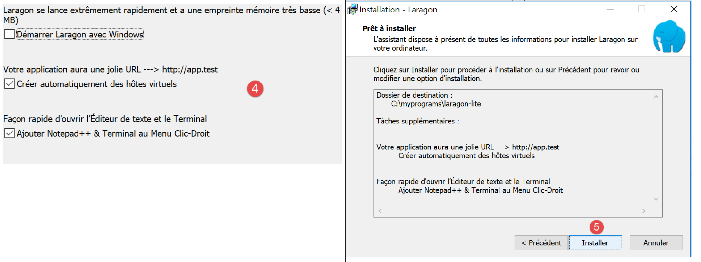
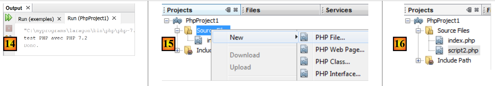

2. Einrichten einer Entwicklungsumgebung
Die Skripte wurden in der folgenden Umgebung geschrieben und getestet:
- einer Apache-Webserver-/MySQL-DBMS-/PHP 7.3-Umgebung namens Laragon;
- die Entwicklungs-IDE NetBeans 10.0;
2.1. Installation von Laragon
Laragon ist ein Paket, das mehrere Softwarekomponenten vereint:
- einen Apache-Webserver. Wir werden ihn zum Schreiben von Webskripten in PHP verwenden;
- das Datenbankmanagementsystem MySQL;
- die Skriptsprache PHP;
- einen Redis-Server, der Caching für Webanwendungen bereitstellt:
Laragon kann (Stand: März 2019) unter folgender Adresse heruntergeladen werden:



- Die Installation [1-5] führt zu folgender Verzeichnisstruktur:

- in [6] der PHP-Installationsordner;
Beim Starten von [Laragon] wird das folgende Fenster angezeigt:

- [1]: das Laragon-Hauptmenü;
- [2]: Die Schaltfläche [Start All] startet den Apache-Webserver und die MySQL-Datenbank;
- [3]: Die Schaltfläche [WEB] zeigt die Webseite [http://localhost] an, die der PHP-Datei [<laragon>/www/index.php] entspricht, wobei <laragon> der Laragon-Installationsordner ist;
- [4]: Über die Schaltfläche [Database] können Sie die MySQL-Datenbank mit dem Tool [phpMyAdmin] verwalten. Dieses Tool müssen Sie zuvor installieren;
- [5]: Die Schaltfläche [Terminal] öffnet ein Befehlsterminal;
- [6]: Die Schaltfläche [Root] öffnet ein Windows-Explorer-Fenster, das auf den Ordner [<laragon>/www] ausgerichtet ist, dem Stammverzeichnis der Website [http://localhost]. Hier sollten Sie alle Webanwendungen ablegen, die vom Apache-Server von Laragon verwaltet werden;
Öffnen wir ein Laragon-Terminal [5]:

- in [1] den Terminaltyp. In [6] stehen drei Terminaltypen zur Auswahl;
- in [2, 3]: das aktuelle Verzeichnis;
- Geben Sie in [4] den Befehl [echo %PATH%] ein, der die Liste der Verzeichnisse anzeigt, die bei der Suche nach einer ausführbaren Datei durchsucht werden. Alle Hauptordner von Laragon sind in diesem Pfad für ausführbare Dateien enthalten, was nicht der Fall wäre, wenn Sie ein Eingabeaufforderungsfenster [cmd] unter Windows öffnen würden. Wenn Sie in diesem Dokument aufgefordert werden, Befehle zur Installation einer bestimmten Software einzugeben, werden diese Befehle in der Regel in einem Laragon-Terminal eingegeben;
2.2. Installation der NetBeans 10.0 IDE
Die NetBeans 10.0 IDE kann unter folgender Adresse heruntergeladen werden (Stand: März 2019):
https://netbeans.apache.org/download/index.HTML

Die heruntergeladene Datei ist eine ZIP-Datei, die einfach entpackt werden muss. Sobald NetBeans installiert und gestartet ist, können Sie Ihr erstes PHP-Projekt erstellen.

- Wählen Sie unter [1] die Option „Datei / Neues Projekt“ aus;
- Wählen Sie unter [2] die Kategorie [PHP] aus;
- Wählen Sie unter [3] den Projekttyp [PHP-Anwendung] aus;

- Geben Sie in [4] einen Namen für das Projekt ein;
- Wählen Sie in [5] einen Ordner für das Projekt aus;
- Wählen Sie in [6] die heruntergeladene PHP-Version aus;
- Wählen Sie in [7] die UTF-8-Kodierung für PHP-Dateien aus;
- Wählen Sie in [8] den Modus [Script], um PHP-Skripte im Befehlszeilenmodus auszuführen. Wählen Sie [Local WEB Server], um ein PHP-Skript in einer Webumgebung auszuführen;
- Geben Sie in [9,10] das Installationsverzeichnis für den PHP-Interpreter des Laragon-Pakets an:

- Wählen Sie [Fertigstellen], um den Assistenten zur Erstellung des PHP-Projekts abzuschließen;

- In [11] wird das Projekt mit einem Skript namens [index.php] erstellt;
- Schreiben Sie in [12] ein minimales PHP-Skript;
- Führen Sie in [13] die Datei [index.php] aus;

- in [14] die Ergebnisse im [Ausgabe]-Fenster von NetBeans;
- In [15] erstellen Sie ein neues Skript;
- in [16] das neue Skript;
Der Leser kann alle folgenden Skripte in verschiedenen Ordnern innerhalb desselben PHP-Projekts erstellen. Der Quellcode für die Skripte in diesem Dokument ist in der folgenden NetBeans-Verzeichnisstruktur verfügbar:

Die Skripte in diesem Dokument befinden sich im Projektverzeichnis [scripts-console] [1]. Wir werden außerdem PHP-Bibliotheken verwenden, die im Ordner [<laragon-lite>/www/vendor] [2] abgelegt werden, wobei <laragon-lite> das Installationsverzeichnis für die Laragon-Software ist. Damit NetBeans die Bibliotheken in [2] als Teil des Projekts [scripts-console] erkennt, müssen wir den Ordner [vendor] [2] in den [Include Path] [3] des Projekts aufnehmen. Wir werden NetBeans so konfigurieren, dass der Ordner [<laragon-lite>/www/vendor] [2] in jedes neue PHP-Projekt aufgenommen wird, nicht nur in das Projekt [scripts-console]:

- Gehen Sie in [1-2] zu den NetBeans-Optionen;
- Konfigurieren Sie in [3-4] die PHP-Optionen;
- Konfigurieren Sie in [5-7] den [Global Include Path] von PHP: Die in [7] aufgeführten Ordner werden automatisch in den [Include Path] jedes PHP-Projekts aufgenommen;

- Rufen Sie in [9] die Eigenschaften des Zweigs [Include Path] auf;
- In [10-11] werden die neuen Bibliotheken von NetBeans durchsucht. NetBeans scannt den PHP-Code in diesen Bibliotheken und speichert deren Klassen, Schnittstellen, Funktionen usw., um den Entwickler zu unterstützen;

- In [12] verwendet ein Code-Schnipsel die Klasse [PhpMimeMailParser\Parser] aus der Bibliothek [vendor/php-mime-mail-parser];
- In [13] schlägt NetBeans die Methoden dieser Klasse vor;
- In [14-15] zeigt NetBeans die Dokumentation für die ausgewählte Methode an;
Das Konzept des [Include-Pfads] ist spezifisch für NetBeans. PHP kennt dieses Konzept ebenfalls, aber es handelt sich im Prinzip um zwei unterschiedliche Konzepte.
Nachdem die Entwicklungsumgebung nun eingerichtet ist, können wir uns mit den Grundlagen von PHP befassen.